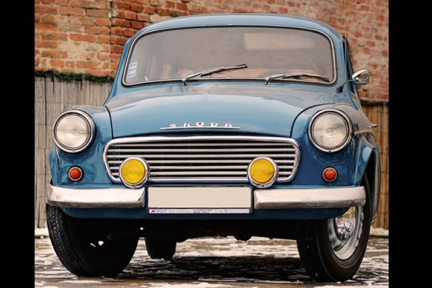

Kvalita, vzhled a charisma
Nejvýstižnìjší slova popisující nádherné stroje, které se dosud dochovaly.
Již od roku 2001 máme praxi s veterány a jejich renovacemi èi opravami.
Vznikli jsem tak, že se sešlo pár nadšencù do starých aut a èasem z toho vznikla firma.
Nabízíme služby od jednoduchých oprav po kompletní renovace. Na ukázku naší práce se podívejte do sekce DOKONÈENÉ VOZY
! NOVINKY !
3.4. 2019
Až do odvolání bohužel nemùžeme pøijímat další zákazníky. Máme dost práce a nebylo by fér pøijímat další zákazníky. Nechceme jít dolù s kvalitou.
Dìkujeme za pochopení